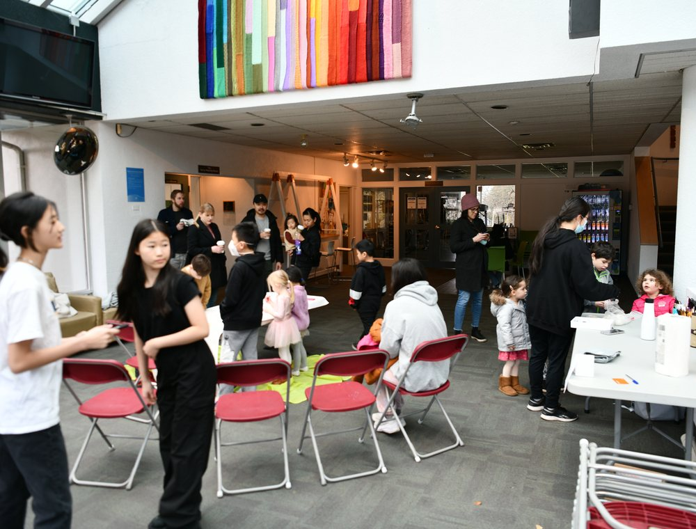
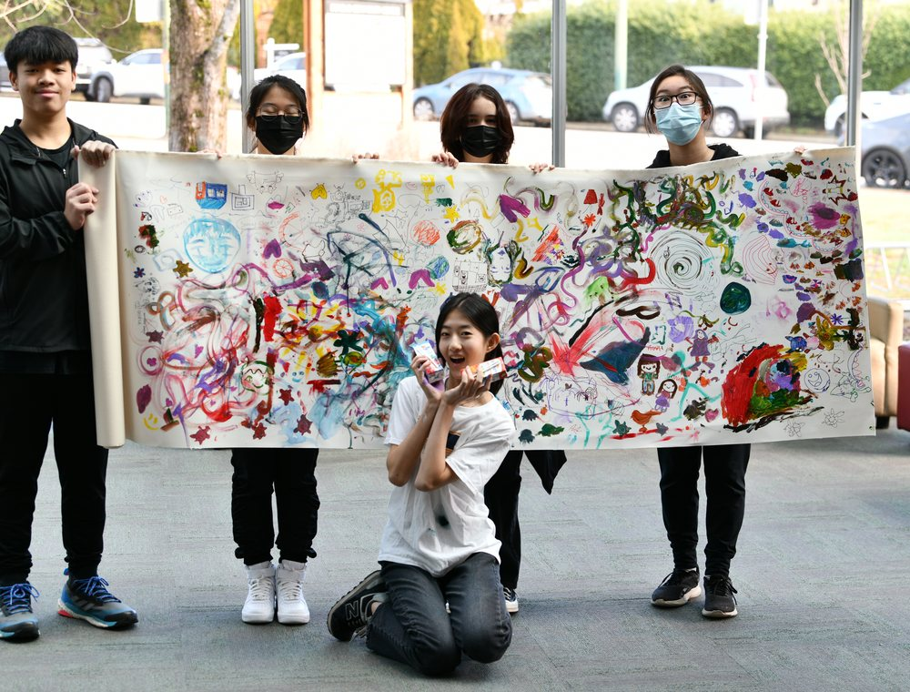

You are the center of change.
Join a youth-led community where service, leadership, and learning come together.
Ways to get involved 03 Steps
Lead an initiative
Have an idea? We encourage young people to step up and lead meaningful projects.
Volunteer
Join one of our teams and help with tutoring, initiatives, outreach, or events.
Join a school club
Help build a school community that supports students and creates real local impact.

Community in action
Real service happens when students bring energy, care, and creativity to the community.

Volunteers gathering for a community initiative.

Students and volunteers working together.

Youth led service helps build stronger communities.
Volunteers gathering for a community initiative.
Students and volunteers working together.
Youth led service helps build stronger communities.